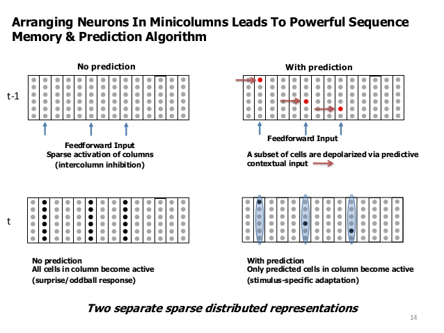
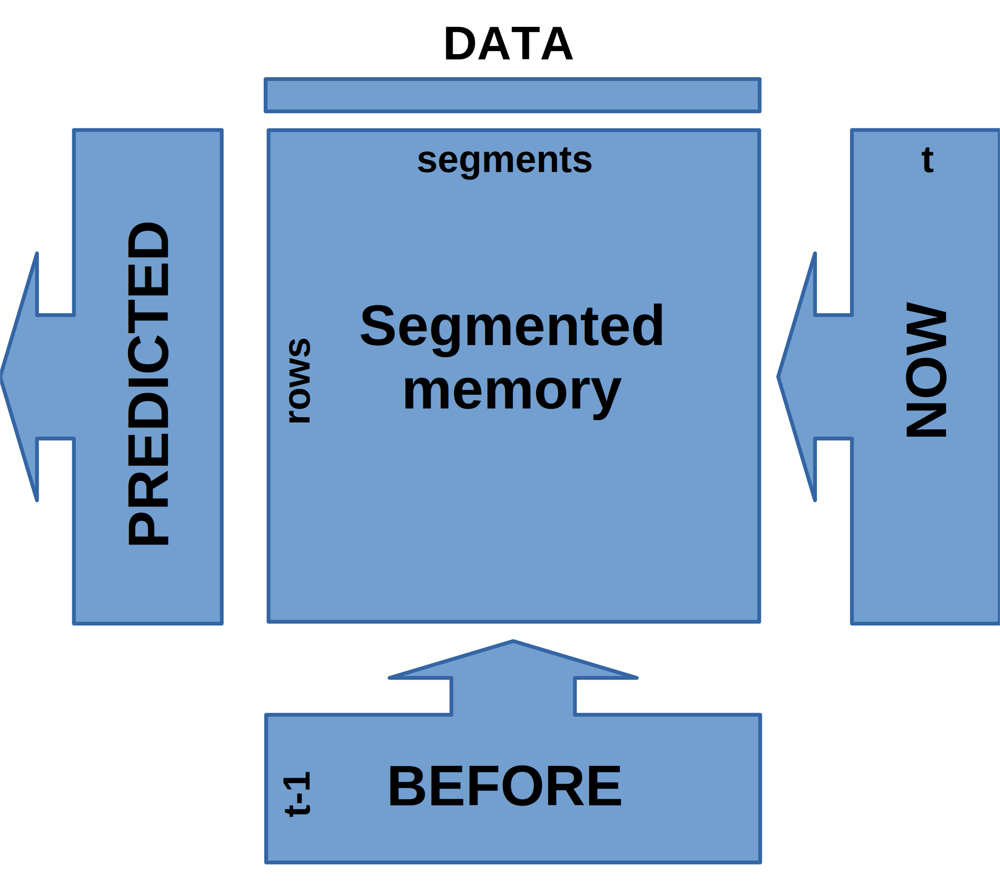

Temporal memory¶
Temporal cycle is a two step process :
some neurons are depolarized by the laterally connected neurons which were active in the previous cycle
next the feed-forward signal activates any depolarized neuron in every 1-column OR if there is no depolarized neuron inside the column activate all the neurons (column burst).
repeat
Step 1 is the prediction phase, which is equivalent to the predict process in Segmented Memory.
Step 2 is equivalent train phase.

But what is different about TM ?
The difference is that TM has to support variable-markov-order sequences i.e. simply storing transitions we did it in Segmented memory wont cut it, we need to store higher dimension transition as I mentioned earlier. But those HDT does not come out of nowhere they have to be created trough interaction of the ‘neurons’ in TM cycle.
I do that in a very clever way. ;)
Any item in the image above can be interpreted as an SDP:SDR in three different ways in two cases as 1D array and one as 2D array.
the 2D array is a binary copy of TM, an array-cell for every neuron with value of 1 or 0.
if you reshape it as 1D array, f.e. a shape of 2000x5 can be transformed to 1D array with size 10000.
The other way is to sum over the columns and then for all sums > 1, set cell to 1 and the rest to zero. This 1D array will be of size 2000.
case 1 can be used as a time-step snapshot of TM
case 2 as SDP with vsize=10000 and sparsity=0.004. This is the high order representation of a symbol from case 3
case 3 as SDP with vsize=2000 and sparsity=0.02. This can be used as predicted output.
How do I use those representations ?
I still use the Segmented Memory to store the transitions, but I also created three helper buffers to recreate the TM cycle. I call them : now, before and predicted.

Here is how it goes :
DATA + PREDICTED => NOW
DATA(1D) is merged with PREDICTED(2D) and the result is stored in NOW(2D).
PREDICTED holds the last predicted/depolarized cells and the DATA is the incoming SDP where every cell which is ONE specifies a column that has to either burst OR activate one of the cells in that column.
The non-bursted cells are directly copied and in the bursted columns the correct cell is found via the mechanism described below in the NOTE.
This is the mechanism by which the DATA(1D) SDP is transformed into higher dimension SDP. F.e. 2000 => 2000x5 or 10000 depending how you look at it.
Learn : BEFORE * NOW => MEMORY
This is the step where we save the TRANSITION into memory. The BEFORE buffer represent time “t-1” and NOW time “t” and also specifies at which rows to save the SDP currently held in BEFORE.
BEFORE + MEMORY => PREDICTED
This process is what you would expect following the same logic as SegMem. The difference is that the input is higher dimension. In this case BEFORE buffer act as a selector.
NOW => BEFORE
Last step is to just copy the NOW buffer into BEFORE. Remember NOW will be overridden in the next cycle.
One thing to take into account is that all those buffers are in iSDP format, so memory-wise it uses the same amount memory as the DATA iSDP, the difference is in the vsize.
Note: In my implementation I skip the actual bursting of the columns, instead I do a virtual bursting, where for every such column I use the Segmented Memory(bit_learn() method) mechanism to find which cell in the column will “activate” and do that in NOW. On previous iterations I did the full mechanism, but the code was longer and probably slower and I had to burst and then un-burst all the cells in the column except the one that had to become active. At the next step the position in the memory where to store the pattern is already selected.
?? feedback or additional inputs … change in learn and predict .. more segments (layers) OR just pass thinned SDR